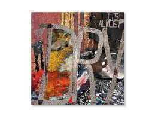

Best Albums of 2022(So far....)

Pusha T, It's Almost Dry
Pusha sounds flawless as ever one of the year's best rap albums, with oustanding production handled by Kanye West and Pharrell Williams. A must-listen for music fans. - Aaron Reed
The Weeknd, Dawn FM
One of the world's biggest artists returns with a outstanding project. A journey narrated by Jim Carrey, The Weeknd takes you through a love-themed album until you reach the dawn. - Aaron Reed
Kendrick Lamar, Mr. Morale and the Big Steppers
One of the best rappers of all time. This project backs it up, Kendrick Lamar never fails to amaze. This is one of the best projects not just this year,but this decade. 10/10. - Aaron Reed
Saba, Few Good Things
A great rap album for an up-and-coming artist. He really shows different flows and styles on this amazing project. Very underrated, 100% worth the listen. - Aaron Reed